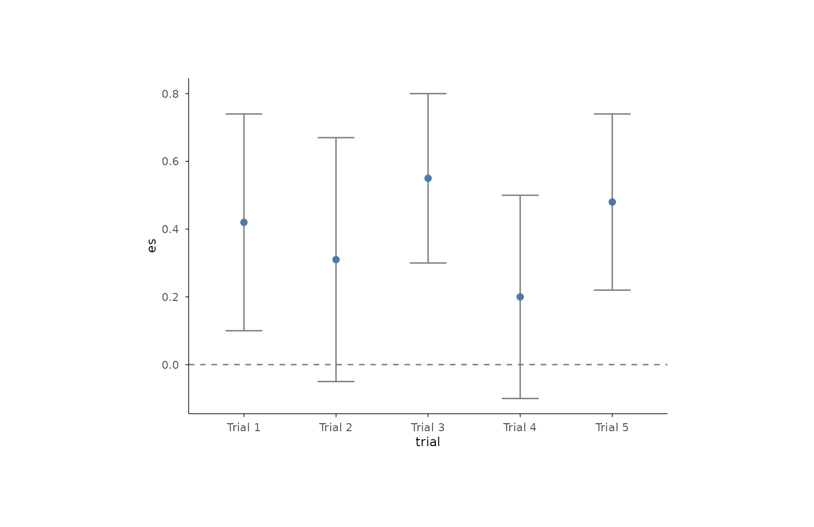

Draws an estimate point with its confidence interval per row – the
standard meta-analysis / effect-size panel. This is a syntax-sugar
composite mark combining mark_errorbar() and mark_point(), plus a
vertical reference rule when ref is supplied.
Usage
mark_forest(
plot,
mapping = NULL,
data = NULL,
ref = NULL,
point_size = 2,
bar_width = 0.4,
line_color = ._MARK_STYLE$soft,
line_width = ._MARK_STYLE$lw_thin,
...
)Arguments
- plot
A plotit object
- mapping
Optional new aesthetics (must include
x,y,xmin,xmax)- data
Optional data for this layer
- ref
Reference value for the null-effect rule (e.g.
0for differences,1for ratios).NULL(default) draws no rule.- point_size
Size of the estimate points (default 2).
- bar_width
Width of the interval bars as a fraction of the categorical slot (default 0.4).
- line_color
Colour for the interval bars and reference rule (default
._MARK_STYLE$soft="grey50").- line_width
Stroke width for interval bars (default 0.5).
- ...
Other arguments passed to the estimate point layer
Details
Equivalent expansion:
p |> mark_errorbar(width = 0.3) |>
mark_point(size = 2) |>
mark_rule(xintercept = ref, linetype = "dashed")Each row needs y (the study/category label position), x (the
estimate) and xmin/xmax (the interval); map them through
encode(). This is the standard horizontal forest; for a vertical
forest, flip the whole plot afterwards with
project_cartesian(flip = TRUE).
References
tidyplots: add_ci95_errorbar() + add_mean_dot() + add_reference_lines()
Vega-Lite: point + errorbar layer composition
Examples
studies <- data.frame(
trial = paste0("Trial ", 1:5),
es = c(0.42, 0.31, 0.55, 0.20, 0.48),
lo = c(0.10, -0.05, 0.30, -0.10, 0.22),
hi = c(0.74, 0.67, 0.80, 0.50, 0.74)
)
studies |>
plotit(encode(x = es, y = trial, xmin = lo, xmax = hi)) |>
mark_forest(ref = 0) |>
project_cartesian(flip = TRUE)
